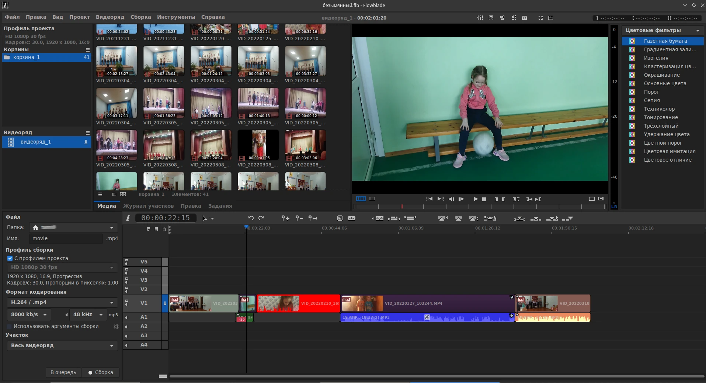
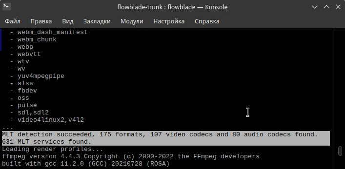
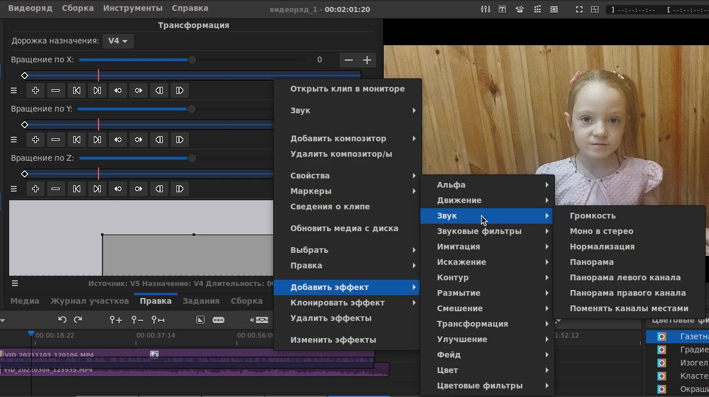
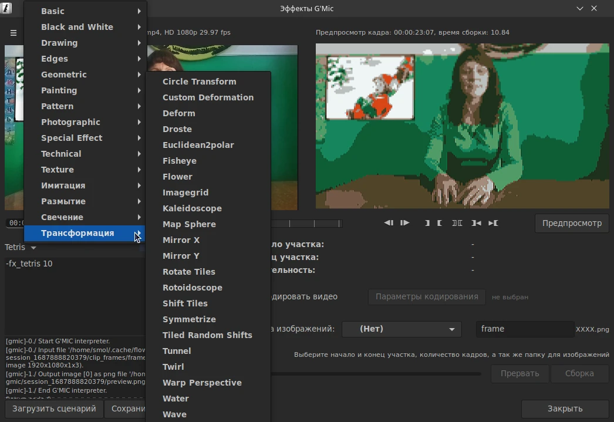
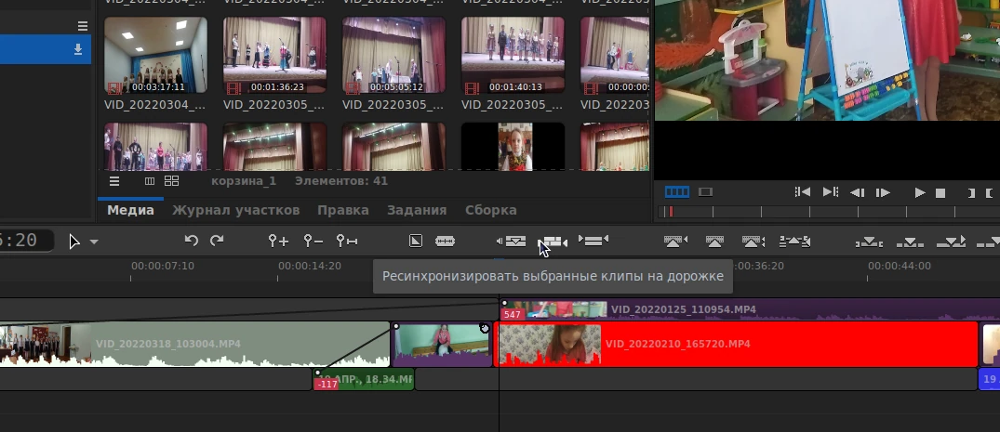
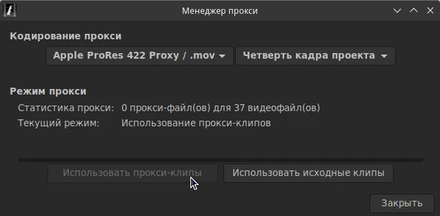

Видеоредактор Flowblade
Быстрый, точный, стабильный

Flowblade — многодорожечный нелинейный видеоредактор, выпущенный под лицензией GPL3. Поможет, как новичку, так и опытному пользователю воплотить в жизнь свои творческие идеи, по созданию видеороликов.
Поддерживает все кодеки

Flowblade поддерживает все кодеки, которые в целом могут быть доступны в системе Linux, так как, он работает в качестве интерфейса для библиотеки FFMPEG. При запуске в терминале, мы видим сообщение о том, что для работы, нам доступны: 175 форматов, 107 видеокодеков и 80 звуковых кодеков.
Композиторы и эффекты

Объединяйте и смешивайте видео, изображения и звук с помощью мощных инструментов. Тонируйте видеоролики в соответствии с вашим видением и изменяйте звук, для получения того настроения, которое вы хотите передать.
Инструмент Эффекты G'MIC

G'MIC — это мощная технология фильтрации изображений с открытым исходным кодом, которую Flowblade предоставляет в виде отдельного инструмента. Смотрите демонстрационный ролик.
Синхронизация

Синхронизируйте ваши видеоклипы со звуковыми клипами или с клипами на других дорожках. Если синхронизация нарушена, можно легко синхронизировать их повторно.
Режим прокси

Если у вас слабый компьютер, слишком медленный внешний накопитель или видеоролики хранятся на сетевом сервере, для комфортного редактирования, вы всегда можете выбрать Режим прокси.
Быстрый, точный, стабильный Flowblade — многодорожечный нелинейный видеоредактор, выпущенный под лицензией GPL3. Поможет, как новичку, так и опытному пользователю воплотить в жизнь свои творческие идеи, по созданию видеороликов. |
Поддерживает все кодеки Flowblade поддерживает все кодеки, которые в целом могут быть доступны в системе Linux, так как, он работает в качестве интерфейса для библиотеки FFMPEG. При запуске в терминале, мы видим сообщение о том, что для работы, нам доступны: 175 форматов, 107 видеокодеков и 80 звуковых кодеков. |
Композиторы и эффекты Объединяйте и смешивайте видео, изображения и звук с помощью мощных инструментов. Тонируйте видеоролики в соответствии с вашим видением и изменяйте звук, для получения того настроения, которое вы хотите передать. |
Инструмент Эффекты G'MIC G'MIC — это мощная технология фильтрации изображений с открытым исходным кодом, которую Flowblade предоставляет в виде отдельного инструмента. Смотрите демонстрационный ролик. |
Синхронизация Синхронизируйте ваши видеоклипы со звуковыми клипами или с клипами на других дорожках. Если синхронизация нарушена, можно легко синхронизировать их повторно. |
Режим прокси Если у вас слабый компьютер, слишком медленный внешний накопитель или видеоролики хранятся на сетевом сервере, для комфортного редактирования, вы всегда можете выбрать Режим прокси. |